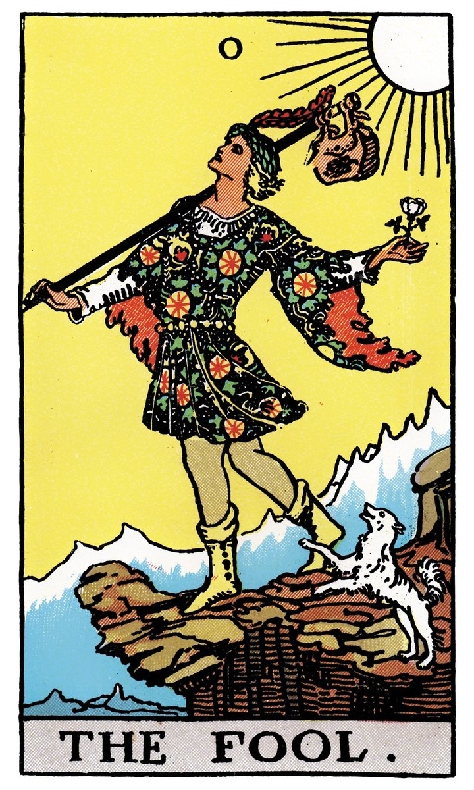
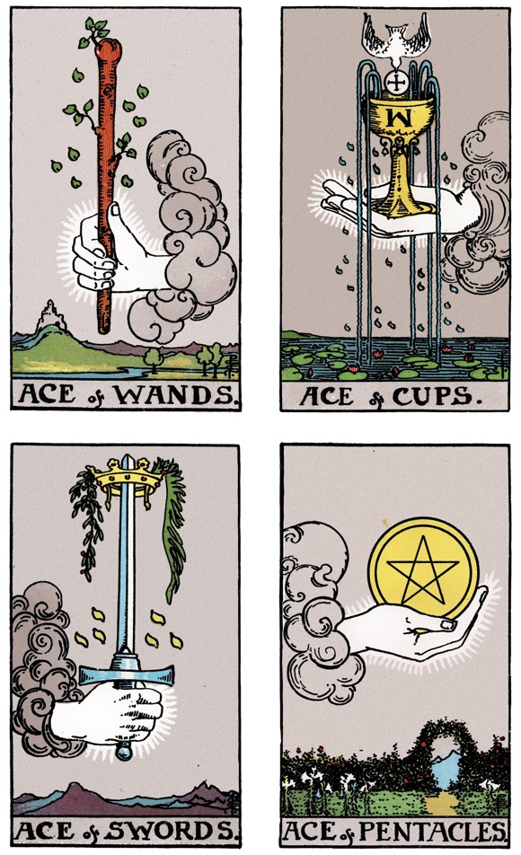
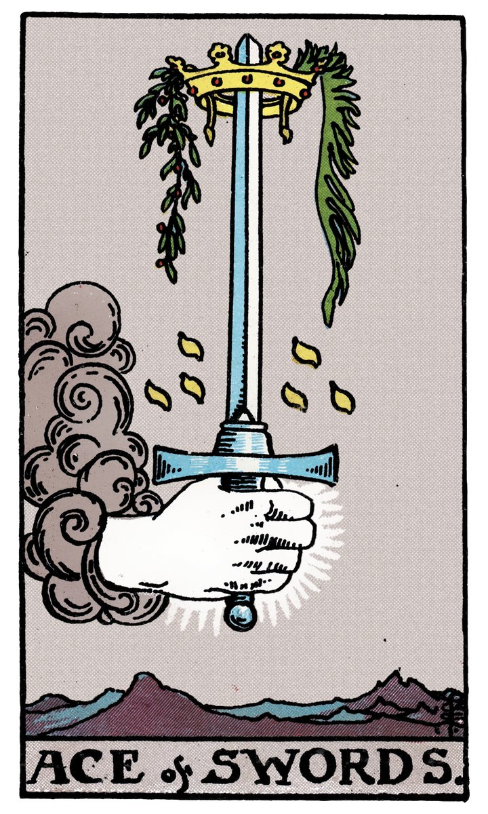
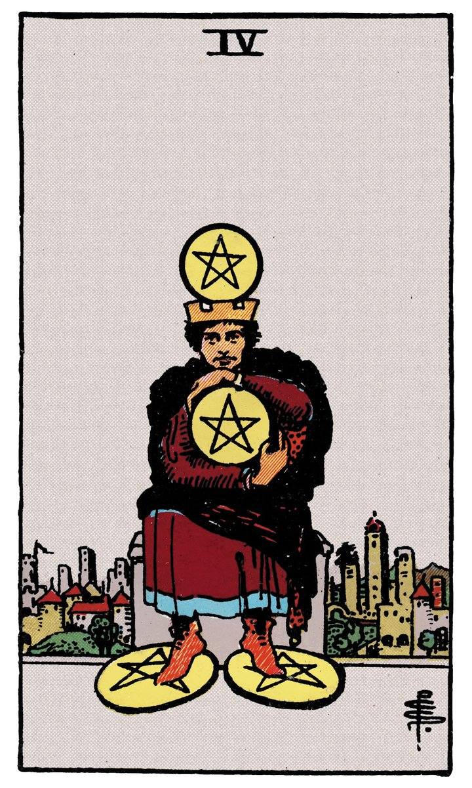
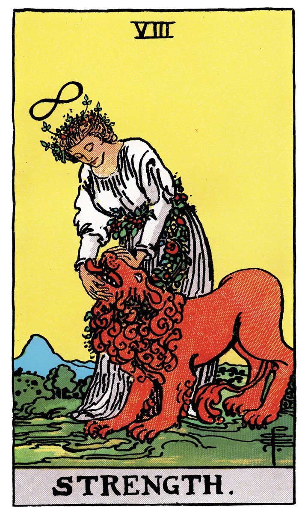
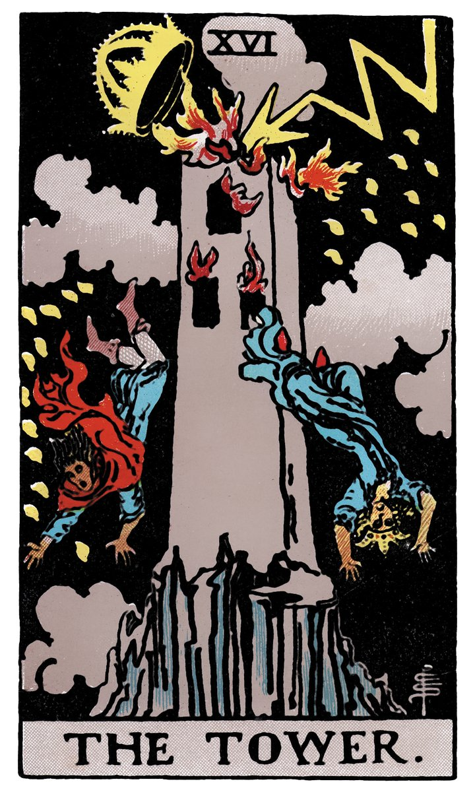

前言
欢迎你打开这套塔罗自学套装。
在你手中的不只是一副牌，而是一套流传了六百多年的图像语言体系。从文艺复兴时期的意大利宫廷，到19世纪法国神秘学沙龙，再到今天你刷到的每一条塔罗短视频——这套78张的图像系统，穿越了战争、革命、互联网泡沫，依然让人忍不住想翻开看看。
为什么？因为人天生对"故事"上瘾，而塔罗牌上的每一张图，都是一段故事的入口。
市面上的塔罗教程大致分两种：一种是让你死记硬背78张牌的"标准牌意"，像背单词书一样从第一页啃到最后一页，三个月后翻开牌还是一脸茫然；另一种是告诉你"这个我帮你算就行"，你永远学不会自己读牌。
这套教程走的是第三条路。
我们不要求你背诵任何一张牌的"标准答案"。相反，我会教你一套方法——关键词联想法——让你用自己的直觉和联想来读牌。你看到的颜色、人物的姿态、画面给你的第一感觉，就是你的答案。这不是偷懒，恰恰是塔罗最本源的用法：一面镜子，照见你自己已经知道但还没说出口的东西。
这门技艺，你可以自己学会。翻开牌的那一刻，解读权在你手里。
怎么使用这套课件：
- 按模块顺序阅读，每个模块都配有一个动手练习
- 练习不需要"做对"，只需要"做到"——写下你的真实反应就好
- 第七模块有一个21天练习计划，建议学完前六个模块后启动
- 练习中遇到困惑，扫码加入我们的学习社群，和其他学员一起交流
准备好了吗？翻开你的第一张牌。
模块一｜为什么人人都对塔罗好奇
一张纸牌，凭什么让人着迷了六百年？
1441年，意大利米兰。一位名叫博尼法乔·本博的画师，为维斯康蒂公爵家族绘制了一套手工金箔牌。这是现存最古老的塔罗牌，比哥伦布发现美洲还早了五十年。
六百年后，你在手机上刷到一条"今日运势"塔罗视频，手指一滑，三秒之内就决定停下来看看。
这中间发生了什么？
答案藏在塔罗的图像里。那些牌面上的国王与乞丐、星星与高塔、恋人战车——它们画的从来不是别人，而是每一个人都会经历的生命切片。你看到的不是一张"死神牌"，而是一次你已经预感了很久的结束；你看到的不是一张"恋人牌"，而是一个你迟迟不敢做的选择。
换句话说，塔罗让你着迷，不是因为它在"预测"你的未来，而是因为它帮你说出了你心里已经有了答案的问题。
从宫廷游戏到神秘学：一条不断被重新发明的路
塔罗牌最初可能真的只是一个纸牌游戏。15世纪的意大利贵族用它来玩一种类似桥牌的"塔罗奇"游戏，和今天的扑克牌没什么本质区别。
转折发生在18世纪。法国神秘学家安托万·库尔·德·热柏林在一本书里提出：塔罗牌是古埃及祭司秘密传承的智慧之书，每一张牌都是赫耳墨斯神秘学的密码。虽然这个说法后来被学者证明是编的——塔罗和古埃及没有半毛钱关系——但"塔罗=神秘智慧"的想象，从那时起就再也收不回来了。
19世纪末，英国神秘学组织"金色黎明"进一步系统化了塔罗的符号体系。他们把占星术、卡巴拉生命之树、炼金术符号全部编入塔罗，形成了一套极其复杂的对应关系网络。这也是今天你能看到的各种"塔罗百科"的源头。
但注意一个有趣的事实：每一代人都在按照自己的理解重新发明塔罗。热柏林把它从纸牌游戏变成埃及智慧，金色黎明把它变成神秘学体系，而20世纪初的艺术家帕梅拉·科尔曼·史密斯则为它注入了全新的生命——1909年出版的《莱德-韦特-史密斯塔罗》（也就是你手上这副牌的画风来源），至今仍是全世界最畅销的版本。她的画风不再追求神秘晦涩，而是让每个人都能一眼看懂。更重要的创举是：她为每一张小阿尔卡纳也画了完整的场景画面，在此之前小牌只是枯燥的数字符号。从此以后，每一张塔罗牌都是一个可以"读"的画面。

塔罗活下来了，因为它足够开放。它从来不是一个"正确答案"的系统，而是一个"让你自己去看"的系统。
神秘感不是问题，神秘感就是卖点
在开始学习之前，有件事需要说清楚。
这套教程不会教你"预测未来"。如果你期待学完以后能告诉别人"下个月你会遇到一个穿红衣服的人"，这不是你要找的教程。
但这不代表我们要把塔罗变成一堂心理学课。神秘感本身是合理的，也是必要的。 牌面的符号、洗牌时的仪式感、翻开牌那一瞬间的期待——这些都是塔罗体验的核心组成部分，不需要用"科学解释"去拆解它们。
你需要记住的只有一条边界：这是一门可以自己学会的技艺。 你不需要依赖任何人帮你"算"，你需要的只是一套方法，让自己和牌之间建立起直接的连接。这套教程的目的，就是把那套方法交到你手上。
仪式感是认真的
开始之前，有一件小事：找一个让你觉得舒服的地方，把桌布铺好，把牌从牌袋里拿出来。
这个动作看起来没什么实际用处，但它是一个信号——告诉你的大脑：现在，我要进入一段和自己对话的时间了。
仪式感不是迷信。它是人类用了几千年的心理开关，用来区分"日常模式"和"内省模式"。你不需要相信任何超自然的东西，只需要认真对待这个动作本身。
练习｜写下你最近一个想不清楚的处境
不用写得多正式，也不用想"这是不是适合用塔罗的问题"。就写一件你最近反复在想、但没有答案的事。可以是：
- 一段让你犹豫的关系
- 一个不知道怎么选的工作决策
- 一种说不清楚但一直存在的烦躁
- 或者就是"我不知道自己到底想要什么"
写下来就好。后面我们会用这张纸上的内容做练习素材。
一个提醒： 这个练习没有标准答案，也不存在"写得好不好"。你只需要诚实地记下来。如果你想发到社交媒体上，可以用话题 #塔罗自学日记——但内容不必暴露隐私，写"完成模块一练习"就足够了。
模块二｜认识你的牌
你的牌，不只是78张纸
打开盒子的时候，你可能会先注意到那块黑色绒面桌布，和那个束口牌袋。先别急着拆牌，我们花一分钟聊聊这两个配件。
桌布不只是为了保护牌。 它是一种"空间划定"——铺开桌布的那一刻，你在桌上划出了一块专属于你和牌的对话区域。以后每次练习，铺桌布这个动作本身就会成为进入状态的信号。
牌袋也不只是为了收纳。 把牌装进牌袋，是一个"关上对话"的动作。一次抽牌练习结束了，牌回到袋子里，你和它的这次对话告一段落。这个仪式感，比你想象中更重要。
好了，现在把牌拿出来，握在手里。感觉一下它的大小、厚度、纸张的质感。这78张牌，从今天开始就是你的了。
78张牌的骨架：大阿尔卡纳 + 小阿尔卡纳
塔罗牌一共78张，分成两个层级。这个结构本身就是一套世界观。
大阿尔卡纳：22张"人生主题"
"阿尔卡纳"这个词来自拉丁语 arcanum，意思是"奥秘"或"秘密"。大阿尔卡纳一共22张，从0号"愚人"到21号"世界"。
你可以把这22张牌理解为一趟旅程：从一张白纸出发（愚人），经历相遇、抉择、挑战、迷失、觉醒，最终抵达完整（世界）。每一张大牌，代表的是人生中一个阶段性的主题——不是今天中午吃什么，而是"我正处于一个什么样的生命阶段"。
0号牌「愚人」—— 大阿尔卡纳的第一张。一个年轻人站在悬崖边，手里拿着一朵白玫瑰，脚边跟着一只小狗。他望着天空，对脚下的深渊毫不在意。这不是"愚蠢"，而是每个人出发时的样子：不知道前方有什么，但愿意迈出第一步。
这22张牌的编号不是随便排的。从0到21，每一张牌都在讲述旅程中的一段——从愚人的天真出发，经历魔术师的创造、女祭司的内省、恋人的选择、死神的放手、高塔的崩塌、星星的希望……最终抵达世界的完整。以后你在练习中会慢慢熟悉每一张，现在不用记。
小阿尔卡纳：56张"日常情境"
如果说大阿尔卡纳是22个生命主题，那小阿尔卡纳就是日常生活的56个切片。
小阿尔卡纳分成四个牌组，每个牌组14张（从1到10，再加4张宫廷牌）。这四个牌组对应四种元素：

| 牌组 | 对应元素 | 代表领域 | 常见象征物 |
|---|---|---|---|
| 权杖 🪄 | 火 🔥 | 行动、热情、创造力 | 火焰、棍棒、植物 |
| 圣杯 🏆 | 水 💧 | 情感、直觉、关系 | 杯子、水流、鱼 |
| 宝剑 ⚔️ | 风 🌬️ | 思维、判断、沟通 | 刀剑、云、鸟 |
| 星币 🪙 | 土 🪨 | 物质、身体、实际成果 | 金币、五角星、大地 |
快速记忆技巧： 不用背。你只需要记住一句话——"火行动，水感情，风思考，土物质"。以后看到一张小牌，先看它的牌组符号，就知道它大致在说哪个领域的事。
来看看四元素牌组各自长什么样。以下四张分别是权杖、圣杯、宝剑、星币的1号牌——每个牌组的起点：




观察一下这四张牌的视觉语言：
- 权杖王牌（火）： 从云中伸出一只手，握着一根正在发芽的权杖。画面充满动感和生命力——这就是"行动"的能量。
- 圣杯王牌（水）： 一只精致的圣杯被云朵托举，杯口溢出五道水流。画面宁静、丰沛——这就是"情感"的流动。
- 宝剑王牌（风）： 一只手持利剑高举，剑尖顶着王冠，周围是山脉和云。画面锐利、清醒——这就是"思维"的穿透力。
- 星币王牌（土）： 一只巨手托着一枚金币，下方是繁花盛开的花园。画面稳定、富足——这就是"物质"的根基。
宫廷牌：人物性格的16种面貌
每个牌组里有4张宫廷牌：侍从、骑士、王后、国王。你可以把它们理解为人格的不同面向——可能是你自己某个时刻的样子，也可能是你生活中遇到的某类人。现在先不展开，后面练习中你自然会感受到它们。
一眼认出来：大牌 vs 小牌
翻牌的时候，你可能会想快速分辨"这是一张大牌还是小牌"。其实不需要任何知识，看一眼就能分出来：
| 特征 | 大阿尔卡纳 | 小阿尔卡纳 |
|---|---|---|
| 画面 | 丰富的场景、多个人物、复杂背景 | 相对简洁、符号化 |
| 编号 | 牌面顶部或底部有罗马数字（0-XXI） | 牌面有数字+花色符号 |
| 牌名 | 英文牌名写在底部（如 THE FOOL） | 通常只写数字和花色（如 ACE of WANDS） |
| 感觉 | 像一幅完整的画 | 像一个特写镜头 |
翻一遍你的牌，按"大牌"和"小牌"分成两叠。感觉一下：大牌给你的整体感觉，和小牌有什么不同？不需要用语言表达，就感受一下。
洗牌仪式：你不需要任何"正确"的方法
网上有很多关于"如何正确洗塔罗牌"的说法：必须用左手、不能让别人碰、要顺时针洗七次……这些说法没有任何一条是"必须"的。
你可以像洗扑克牌一样洗。可以摊在桌上画圈搅乱。可以从中间切牌。可以在手里一张一张地翻。
唯一重要的原则是：你在洗牌的时候，脑子里在想你要问的问题。 洗牌不是"让牌变干净"（虽然仪式感上你可以这么理解），而是让你自己进入状态——你的手在做一件事，你的注意力在另一件事上。这种"手忙脑静"的状态，就是塔罗最好的准备状态。
试试看：把牌握在手里，心里想着模块一练习里你写下的那个问题，然后洗牌。不用想"我洗得对不对"，就自然地洗，洗到你觉得"差不多了"就停。
练习｜完成一次"开箱仪式"
这不是一个需要"做对"的练习，而是一个体验。步骤如下：
- 铺好桌布——选一个干净平整的桌面，把桌布铺开
- 取出牌——从牌盒里把78张牌拿出来，放在桌布上
- 用手掌感受牌的厚度——闭上眼睛，手放在牌堆上，心里默念一遍你模块一写下的那个问题
- 分牌——翻开牌，按"大牌"和"小牌"分成两叠。看一眼每张大牌的画面，不用记，就感受
- 洗牌——把牌合起来，用你觉得最自然的方式洗牌，不用数次数，洗到感觉"到了"就停
- 收牌入袋——把牌整理好，装进牌袋，拉紧束口绳
整个过程大概5-10分钟。做完以后，如果你愿意，可以拍一张"开箱照"发到小红书或抖音。不需要露脸，拍桌布+牌袋+牌的局部就好。带上话题 #塔罗自学日记，你的第一条自然传播素材就有了。
下个模块预告： 你已经有了一张牌、一个问题、和一次"仪式感"。接下来我们要进入这套教程最核心的方法——关键词联想法。不背书，不查字典，让你用自己的眼睛去读牌。
模块三｜关键词联想法
新手最大的痛点：记不住牌意
学塔罗的人，十个有九个卡在同一个地方——翻开一张牌，脑子里一片空白，然后下意识地想去翻书查"标准牌意"。
这不是你的问题。市面上大多数塔罗教程，本质上都是把78张牌的"标准牌意"列给你，然后让你像背英语单词一样去记忆。问题是，任何一张塔罗牌都没有唯一的标准答案。同一张"高塔"，在不同的问题里、不同的位置、面对不同的人，可能意味着"解放""崩溃""觉醒""突如其来"——你背哪个？
更根本的是：塔罗从来就不是一个"查字典"的工具。 它是一个"看图说话"的工具。从15世纪到今天，它之所以能跨越语言和文化的界限流传下来，不是因为每张牌有一句固定的"定义"，而是因为它的图像足够丰富、足够开放，让每一个看它的人都能看出不同的东西。
关键词联想法，就是教你重新学会"看图说话"。
你天生就会读图
先做一个实验。随便从牌堆里抽出一张牌，不要看书，不要查任何资料，就看牌面。问自己三个问题：
- 这张画面上的人在做什么？ ——站着还是坐着？面向你还是背对你？一个人在还是一群人在？
- 这张画的颜色给你什么感觉？ ——暖色调还是冷色调？明亮还是昏暗？有没有特别跳的颜色？
- 如果用一个词来形容这张画，你会用什么词？
你给出的那个词，就是你对这张牌的第一直觉关键词。它不需要和任何"标准牌意"吻合。它只需要是你真实看到的、真实感觉到的。
这就是关键词联想法的核心：你的直觉比任何书都管用。 你要相信，塔罗牌画面上的一切——人物的姿态、背景的颜色、构图的疏密——都是被设计来触发你直觉的。你不需要"学"怎么看，你只需要允许自己去看。
三个维度：姿态、颜色、数字
当然，直觉需要一些"抓手"——不能每次都干瞪眼看画。下面给你三个具体的观察维度，每次翻开一张牌，从这三个角度切入，几乎一定会蹦出一个词。
维度一：人物的姿态
先看牌上有没有人物。如果有，观察这个人的姿态：
- 站着还是坐着？ 站着通常意味着行动、力量、主动性；坐着意味着思考、等待、被动接受。
- 面朝哪个方向？ 面向你——这件事和"你"直接相关；背对你——可能你在逃避什么，或者这件事还没准备好被你看到。
- 手上在做什么？ 举着什么东西？指向某个方向？握紧拳头还是摊开手掌？
- 眼神看哪里？ 直视前方？低头？闭眼？看向远方？
举个例子： 翻开一张牌，画面上一个穿着长袍的人站在悬崖边，手里拿着一根棍子，望向远方。你不需要知道这是"愚人牌"，你只需要想：一个人站在悬崖边上，他不知道前方是什么，但他看起来很放松，甚至有点期待。你的关键词可能是——"出发"、"冒险"、"不管不顾"、"新的开始"。任选一个，它就是你的第一直觉。
维度二：颜色的情绪
颜色是人类最原始的信号系统。红色是警报，蓝色是平静，黄色是阳光。塔罗牌面上的颜色不是随便涂的，每一块颜色都在传递情绪：
- 大量黄色/金色： 活力、意识觉醒、智力、光明
- 大量蓝色： 平静、沉思、直觉、距离感
- 大量红色： 激情、愤怒、行动力、危险
- 大量黑色/深色： 未知、恐惧、深度、隐藏
- 大量绿色： 生长、治愈、自然、缓慢
- 大量白色： 纯净、真理、空白、起点
快速练习： 看牌面占比最大的颜色是什么，然后问自己——"如果今天我的心情是这个颜色，那是什么情绪？"答案就是关键词。
维度三：数字的暗示
每张塔罗牌都有一个编号。数字本身就有文化心理上的暗示：
- 0： 起点、无限可能、也意味着"还没成形"
- 1： 开始、独立、专注、也意味着孤独
- 2： 选择、平衡、对立、合作
- 3： 创造、扩张、第三方的介入
- 4： 稳定、结构、也意味着停滞
- 5： 冲突、变化、打破稳定
- 6： 和谐、恢复、沟通
- 7： 内省、挑战、坚持
- 8： 行动、力量、因果
- 9： 接近完成、孤独的坚持、收获前夕
- 10： 完成、轮回结束、新循环的开始
你不用背这张表，练习的时候回来看一眼就行。多翻几张牌，你会发现自己慢慢在建立数字和感受之间的直觉连接。
一个完整的关键词联想示范
假设你抽到了下面这张牌（先不管它叫什么）：

画面：夜晚，天空中有八颗黄色的星星，正中央一颗最大最亮。一个裸体女性跪在池塘边，一只脚在水里，一只脚在岸上。她双手各拿一个水罐，正在将水倒入池塘和大地。远处有一只鸟（朱鹭）站在树上。背景是开阔的原野。
我们用三个维度来看：
| 维度 | 观察 | 关键词候选 |
|---|---|---|
| 人物姿态 | 跪着，一只脚在水中一只在岸上——在"之间"的状态 | 过渡、犹豫、试探 |
| 颜色情绪 | 深蓝色夜空为主，黄色星星是亮点——暗中有光 | 希望、指引、冷静中的期待 |
| 数字暗示 | 这是17号牌——7带有内省意味 | 内在探索、等待 |
我把三个维度放在一起，脑海里浮现的一句话是："你在两个世界之间徘徊，但你其实知道方向在哪。"
所以我的关键词可以选——"指引"。
我甚至不需要知道这张牌叫"星星"——"指引"这个词已经足够我展开一段自我对话了。
当牌倒过来：逆位怎么读
洗牌抽牌的时候，你一定会遇到牌面倒着的情况——这就是逆位。很多新手一看到逆位就慌了，以为"倒过来=坏牌"。不是。
逆位不是坏消息。它只是同一张牌的能量在以不同的方式表达。你可以把它理解为：正位是这股能量在顺畅流动，逆位是它遇到了某种阻碍或变化。
逆位和正位的关系，大致有四种：
| 关系 | 意思 | 怎么理解 |
|---|---|---|
| 阻塞 | 能量在，但被卡住了 | 想出发但被恐惧困住——能量没消失，只是流不动 |
| 过度 | 能量太强，失控了 | 本来是勇气，变成了鲁莽——好东西过量了 |
| 不足 | 能量太弱，没发挥出来 | 本来该行动的，变成了犹豫——火点不起来 |
| 内在化 | 外在的事变成了内在过程 | 别人看不出变化，但你的内心正在经历翻涌 |
记住一点：逆位不是"正位的反面"，是"正位的变奏"。 愚人正位是"出发"，逆位不是"不出发"——它可能是"想出发但不敢"（阻塞），也可能是"闭着眼睛乱冲"（过度），也可能是"内心已经在路上了，但外在还没动"（内在化）。具体是哪种，要结合你的问题去感受。
用关键词联想法读逆位
最简单的做法：把同一张牌正位和逆位各看一遍，感受你的关键词怎么变了。
试试看——拿出一张"愚人"。先正着看，写下你的第一直觉关键词。然后把牌倒过来，再看一遍。画面变成了什么？
- 正位的愚人抬头望天，脚下悬崖在他身后——关键词可能是"出发""信任"
- 倒过来之后，他变成了头朝下、面朝悬崖坠落的方向——你的感觉可能变成"失控""坠落""来不及了"
你看，同一张牌，只是翻了个面，你身体的反应就不一样了。逆位的解读，就是从这种"感觉变了"开始的。 你不需要背"愚人逆位代表什么"——你只需要倒过来看，相信你新的直觉。
一个实用建议： 新手阶段遇到逆位，先别急着查资料。把牌倒过来看30秒，问自己——"如果这张画面的故事倒过来讲，它变成了什么？"你的答案就是你的逆位关键词。和正位一样，没有标准答案，只有你真实的感受。
练习｜随机抽3张牌，每张写一个关键词
- 想着你模块一写下的那个问题，洗牌
- 随机抽出3张牌，牌面朝上，一字排开
- 每张牌用三个维度（姿态、颜色、数字）各观察30秒
- 每张牌只写一个关键词——你直觉最强烈的那个词，不用写解释
- 三张牌都写完后，把三个词连起来读一遍，感受它们之间有没有什么关系
记住： 这个练习不是"考试"。你写的关键词不需要和任何人的答案一致。如果你觉得一张牌给你的感觉是"烦躁"，就写"烦躁"——哪怕牌面上画的是一个微笑的天使。直觉没有对错，只有诚实不诚实。
模块四｜每日单张牌练习
最强大的练习，往往是最简单的
现在你已经会洗牌了，会用三个维度找关键词了。接下来要做的不是学更多牌阵，而是建立一件更基础的事：习惯。
塔罗不是那种"学完就会"的技能。它更像学一门乐器——每天摸一摸，比一周猛练一次有效十倍。而这个模块要教你的"每日单张牌练习"，就是塔罗世界里最像"每天练音阶"的东西。
做法极其简单：每天早上或晚上，洗牌，抽一张牌，看一眼，记下来。 全程不超过三分钟。
但它的效果，远比你想象的大。
为什么是"一张牌"？
你可能觉得一张牌太少——一个问题不是至少要用三张牌才能看清楚吗？
这里有一个反直觉的事实：对于日常自我觉察来说，一张牌往往比三张牌更有效。 因为信息越少，你的直觉参与度越高。三张牌会让你不自觉地进入"分析模式"——哪张是过去哪张是现在、它们之间什么关系——这些思考本身就把你从直觉里拉出来了。而一张牌没有这些可以分析的维度，你只能直接去感受它。
更关键的是，每天一张牌的轻量感，让你没有借口不做。"太忙了""太累了""今天没什么想问的"——这些都不影响你花两分钟抽一张牌。轻量，是习惯养成的前提。
具体操作步骤
第一步：选一个固定时间
早上起床后，或者晚上睡前。固定时间是为了让你的大脑把这个动作和"日常节奏"绑定。你不需要刻意坚持，只需要把它挂在另一个你每天都在做的事情后面——比如"刷牙后抽牌"或"关灯前抽牌"。
第二步：心里默念一个简单问题
不需要像三牌阵那样想一个复杂的问题。只需要一个简单到不能再简单的提问，比如：
- "今天我需要关注什么？"
- "我现在是什么状态？"
- "今天的关键词是什么？"
或者什么都不问，就在心里过一遍"请给我一个今天需要的提示"——然后洗牌、抽牌。
第三步：看一眼，感受十秒
翻开牌，看着它。用模块三的三个维度快速扫一遍：姿态、颜色、数字。然后问自己："如果今天是一张牌，它为什么是这张？"
十秒钟就够了。不要分析，不要查资料，不要翻开书看"标准牌意"。就感受。
第四步：记一句话
用一个本子或手机备忘录，记三样东西： - 日期 - 牌名（如果你还不知道牌名，就写"拿剑的男人坐在椅子上"之类的简短描述） - 一句话：这张牌让你想到今天/明天的什么？
比如：
7月12日 | 星币六 | "今天可能会有人帮我，注意接受" 7月13日 | 隐士 | "今天想一个人待着，没关系的"
不用写多，一句话就够了。
连续3天记录，然后回头看
单张牌的真正价值，不在当天，而在三天后回头看的时候。
第一天抽到一张牌，你可能会觉得"好像也没什么特别的"。第二天又抽一张，第三天再来一张。然后你翻回去看这三天的记录——你会发现一些自己都没注意到的模式。
- 你可能发现自己在连续三天里抽到的牌，颜色都偏暗——也许你最近在经历一段情绪低谷，但你之前没意识到
- 你可能发现每张牌里都有"水"的元素——你的直觉可能在告诉你，最近的情感问题比工作问题更需要关注
- 你可能发现某天抽到的牌，和你那天实际发生的事之间，有一种"不能证明但莫名觉得有关"的联系
这种发现，比任何书上告诉你"这张牌代表什么"都更有价值。因为它是你自己的。是你和你的牌之间建立起来的私密语言。
常见问题：这样真的"准"吗？
你可能会有这个疑问：每天随手抽一张牌，凭什么能反映我的状态？
换个角度想这件事：不是牌在"预测"你的状态，而是你的状态在决定你怎么"看"这张牌。
你心情好的时候看"高塔"——可能会觉得它在说"旧的束缚被打破了"。你心情差的时候看同一张"高塔"——可能会觉得它在说"一切都崩塌了"。牌没变，是你变了。而恰恰是你对牌的不同反应，告诉了你自己当下的真实状态。
这就是每日单张牌练习的核心价值：不是让牌告诉你答案，而是通过你对牌的反应，让你自己看清自己。
练习｜连续3天，每日一张牌
从明天开始，连续三天做这件事：
- 每天固定时间抽一张牌
- 用模块三的三维度扫一遍（姿态、颜色、数字）
- 记录：日期 + 牌名/描述 + 一句话感受
- 第三天晚上，回看三天的记录，回答："这三天里，我对自己有什么新的发现？"
你可以用下面这个格式记录：
| 日期 | 牌 | 今天的关键词 |
|---|---|---|
| __月__日 | __ | __ |
| __月__日 | __ | __ |
| __月__日 | __ | __ |
三天后回顾时的发现：
下个模块预告： 你已经能每天和一张牌对话了。接下来我们学习三牌阵——如何把一个问题拆成三个位置，以及更重要的：如何把问题本身问对。
模块五｜三牌阵与提问技巧
从一张到三张：为什么是"三"？
你已经学会每天用一张牌做自我觉察了。现在我们要往前一步：当一个问题比较复杂，一张牌确实不够用的时候，三张牌是最优雅的解法。
为什么是三张，而不是五张、十张、凯尔特十字？
因为"三"是人类叙事最自然的节奏。故事有开头、中间、结尾。时间有过去、现在、未来。我们有身、心、灵。一分为三的思维方式，几乎刻在每一种文化里。三张牌让你有足够的维度去看一个问题的不同侧面，又不至于多到让你迷失在信息里。
更重要的是：三张牌天然要求你建立"联系"的能力。 你不再是孤立地看每一张牌，而是要开始看它们之间的流动——从第一张到第二张到第三张，发生了什么变化？这在为模块六的"串成故事"做准备。
三个基础三牌阵
以下三个牌阵，从简单到略有深度。建议你先从"过去-现在-未来"开始练，熟练了再尝试另外两个。
牌阵一：过去 — 现在 — 未来
最经典的三牌阵。牌位含义：
| 位置 | 含义 |
|---|---|
| 左（过去） | 已经发生的事、当前问题的来源、影响你的背景 |
| 中（现在） | 当下的核心状态、你此刻的处境 |
| 右（未来） | 趋势和可能性（不是"一定会发生"，而是"按当前方向可能走向哪里"） |
注意一个关键认知： 右边的"未来"牌，不是预言。它告诉你的是"如果一切按现状继续，可能会出现的状况"。如果你不喜欢这张牌——你可以改变现状。这正是塔罗最有价值的地方：不是告诉你宿命，而是给你一个调整方向的机会。
牌阵二：身 — 心 — 灵
当你觉得一个问题"说不清楚哪里不对，但就是不对"的时候，用这个牌阵。
| 位置 | 含义 |
|---|---|
| 左（身） | 行动层面——你在做什么、你的身体状态、你的实际行动 |
| 中（心） | 情感层面——你真正的感受、情绪状态、关系中在发生什么 |
| 右（灵） | 意义层面——这件事对你更深层的意义、你内在的成长方向 |
这个牌阵特别适合那种"道理都懂但心里过不去"的问题。它帮你把"想法"（心）和"行动"（身）分开看，避免搅在一起。
牌阵三：选择 — 障碍 — 资源
当你在两难中，不知道该怎么选的时候。
| 位置 | 含义 |
|---|---|
| 左（选择） | 你真正在选的是什么？——问题本身的核心 |
| 中（障碍） | 是什么在阻碍你？——内在或外在的阻力 |
| 右（资源） | 你有什么可以利用的？——你忽略的优势、支持、路径 |
这个牌阵的妙处在于：它不替你选，但它让你看见你之前没看见的东西——可能是你一直忽略的资源，也可能是你一直不敢面对的障碍。
比牌阵更重要的：如何把问题问对
这是整个模块最核心的内容。读懂了，你的塔罗水平直接上一个台阶。
大多数人问塔罗的问题是"封闭式"的：
- "我能不能升职？"
- "他喜不喜欢我？"
- "这件事会不会成功？"
这类问题的共同点是：它们把答案放在"外部"——等待一个外部的判断，而不是开启一段内部的探索。 你在把自己变成一个等待分数的考生，而塔罗被迫扮演一个不靠谱的考官。
我们要学会把封闭式问题改写为开放式提问。原则很简单：把焦点从"结果会怎样"转向"我在其中是什么状态"。
改写示例
| 原始问题（封闭式） | 改写后（开放式） |
|---|---|
| "我能不能升职？" | "我在这份工作里真正想要的是什么？我为此做了什么？" |
| "他喜不喜欢我？" | "这段关系里我最在意的是什么？我自己的感受是怎样的？" |
| "这件事会不会成功？" | "做这件事的过程中，我最担心什么？我最大的支持是什么？" |
| "我该不该离开？" | "留下来和离开，分别让我害怕的是什么？" |
| "下个月运气好吗？" | "我现在的状态里，有什么是我需要正视的？" |
注意改写前后的区别：改写前，你在等答案；改写后，你在找线索。 前者让你依赖塔罗（或者依赖解牌的人），后者让你依赖自己。
这也是这套教程和市面上其他教程最根本的区别之一。我们不教你"算出"答案，我们教你问出好问题。因为一个好问题，本身就包含了一半的答案。
三牌阵完整练习示范
假设你模块一写下的问题是："我在考虑要不要换工作，但一直下不了决心。"
第一步：改写问题。 把"要不要换工作"改写为三个开放式提问，比如： - "我现在的工作让我失去了什么？"（过去） - "我害怕换工作的背后，真正害怕的是什么？"（现在） - "如果往前走，我最需要关注的是什么？"（未来）
第二步：用"过去-现在-未来"牌阵，洗牌、抽三张。
第三步：每张牌用一个关键词（模块三的方法），然后连起来看。 比如：
过去位：星币六（关键词："依赖"）——我可能一直在依赖这份工作给我的稳定收入，不敢冒险 现在位：宝剑八（关键词："困住"）——我被自己的想法困住了，不是真的没有选择 未来位：愚人（关键词："出发"）——往前走意味着一段未知，但未知本身不是坏事
第四步：连成一段自己的话。 "我意识到我留在现在的工作里，主要是为了稳定。真正困住我的不是没有机会，而是我害怕未知。但往前走本身，就是一次新的开始。"
这就完成了一次完整的自我对话。你不是在"算"要不要换工作——你在看清自己为什么纠结。
练习｜把自己的困扰改写成3个提问 + 三牌阵练习
- 拿出你模块一写下的那个困扰
- 把它改写成3个不同角度的开放式提问（可以参考上面的改写示例）
- 选一个三牌阵（建议先用"过去-现在-未来"），针对你的提问抽三张牌
- 每张牌用关键词联想法给出一个关键词
- 把三张牌的关键词连起来，写一段3-5句的自我叙述
下个模块预告： 你已经能从三张牌中提取关键词了。接下来，我们要把这些关键词变成一段有开头、中间和结尾的完整故事——这是从"读牌"到"读自己"的关键一步。
模块六｜从单张牌到一个故事
牌和牌之间，有一条看不见的线
你已经会了关键词联想，会了三牌阵，会把封闭式问题改写成开放式提问。现在你翻开三张牌，脑子里有三个关键词——然后呢？
大多数自学者卡在这一步：三张牌都有了感觉，但就是不知道它们"加起来"在说什么。于是又回到老习惯——翻开书，一张一张查"标准牌意"，最后拼出来的东西，像三句互不相干的句子强行贴在一起。
问题出在方法上。逐张解释 + 拼凑 = 没有故事。 塔罗不是用三张牌分别回答三个独立问题，而是用一组图像共同讲述一段流动的叙述。
这个模块要教你的，就是如何把多张牌变成一段故事。这是从"读牌"到"读自己"的最后一步，也是最关键的一步。
方法：找"流动"
故事的本质是变化。一个角色从状态A，经历了什么，变成了状态B。塔罗牌阵也一样——从左到右，牌和牌之间一定在发生什么。
你不用分析"这张牌代表什么+那张牌代表什么"，而是问自己一个问题：
"从第一张到第三张，发生了什么变化？"
具体来说，找三个层面的流动：
一、情绪的流动
看人物的面部朝向、身体姿态、背景光线：
- 从左到右，人物是越来越有力量，还是越来越疲惫？
- 颜色是越来越明亮，还是越来越暗？
- 画面是越来越复杂，还是越来越简单？
例子： 左边一张牌人物背对画面，中间侧身，右边正面直视——情绪在"转向"：从回避到面对。
二、动作的流动
看人物在做什么：
- 从静止到行动？
- 从封闭到开放？
- 从独自一人到多人出现？
例子： 左边一个人坐着不动，中间一个人在走路，右边一群人在庆祝——动作在"加速"：从停滞到投入。
三、视角的流动
看画面给你的"距离感"：
- 画面视角越来越近——在深入一个问题的核心
- 画面视角越来越远——在从更大的格局看这件事
- 视角不变——这个问题需要你换个角度
故事的三段式：起点 → 转折 → 落点
把三个维度的流动串在一起，就形成了一段故事的基本结构：
| 位置 | 叙事功能 | 核心问题 |
|---|---|---|
| 第一张 | 起点 | 故事从哪里开始？你现在在哪里？ |
| 第二张 | 转折 | 中间发生了什么？推动力是什么？ |
| 第三张 | 落点 | 故事走向哪里？你有可能到达哪里？ |
注意：这个结构不是"过去→现在→未来"的专利。任何一个三牌阵（身心灵、选择障碍资源）都可以用"起点→转折→落点"来组织故事。
完整示范：把三张牌变成一个故事
假设你在练习"身—心—灵"牌阵，抽到了这三张牌：
| 身位：星币四 | 心位：宝剑九 | 灵位：太阳 |
|---|---|---|
 |
 |
 |
| 一个铁匠在锻造金属，旁边有四枚金币固定在墙上。画面稳定、专注。 | 一个人坐着，双手抱头，旁边有九把剑挂在墙上。画面沉重、压抑。 | 一个孩子骑在马上，阳光灿烂，周围开满花。画面明亮、轻盈。 |
逐张看的话，你可能会说："行动上我很稳定——情感上我很焦虑——精神上我在成长"。三句独立的话，拼不到一起。
现在我们用"流动"来看：
情绪的流动： 从稳定（身）→ 沉重（心）→ 明亮（灵）。这是一条"先沉下去再升起来"的弧线。
动作的流动： 从专注工作（身）→ 陷入思绪（心）→ 骑马上路（灵）。从做 → 想 → 出发。
视角的流动： 近景（身）→ 室内近景（心）→ 户外远景（灵）。视角在拉远，格局在变大。
现在把它们串成一段故事：
"我在行动上看起来很稳，每天都在认真做事，外界可能看不出什么问题。但真正让我累的，是心里反复在想的事——那些焦虑像深夜醒着脑子里跑马灯一样。不过，我的内心深处其实知道方向在哪。有一种新的力量在生长，它还很年轻，但它想出发。我的身体在干活，心里在焦虑，但灵魂在说——走。"
这不是在"解牌"，这是在读自己。三张牌帮你看到了你内部三个层面之间的张力和方向。
当牌"对不上"的时候——矛盾是礼物
有时候你会发现，三张牌之间好像互相矛盾。比如左边一张看起来很积极的牌，右边一张看起来很消极的牌。这种时候不要试图"调和"——矛盾本身就是信息。
| 力量 | 高塔 |
|---|---|
 |
 |
| 温柔地驯服一头狮子——控制、耐心、内在力量 | 一座塔被雷劈中，人们在坠落——崩塌、释放、突如其来的真相 |
这矛盾吗？表面上矛盾，但串起来可能是一个很有深度的故事：
"我一直在用温和的方式控制局面，觉得一切都在掌握中。但有些东西我压得太久了，它们需要被释放。高塔不是灾难——它是那些我一直不敢面对的真相，终于浮出水面了。"
看到没有？矛盾不是错误，矛盾是你内心正在发生的事。 不要回避它，把它写进故事里。
一个防止"过度解读"的锚
讲故事的时候，你可能会担心："我是不是在瞎编？"
有一个简单的锚可以防止你飘太远：你讲的故事，必须和牌面上的画面有直接关联。 如果牌上画的是一个人坐在王座上，你当然可以说"他在思考"、"他在等待"、"他很有权力感"。但你不应该说"他今天早上吃了两个包子"——除非牌面上画了两个包子。
换句话说：你的联想可以自由，但必须有视觉依据。 这是"直觉联想"和"纯编故事"之间的那条线。
练习｜用同一个困扰，把三张牌串成一个故事
- 用你模块五抽过的三张牌（或者重新洗牌抽一组新的）
- 观察三张牌之间的"流动"——情绪、动作、视角分别发生了什么变化？
- 用"起点 → 转折 → 落点"的结构，把三张牌串成一个3-5句的故事
- 写下来。不要评价自己写得好不好，写下来就是完成
你可以用这个模板：
起点（第一张）： 我现在……
转折（第二张）： 但中间有……
落点（第三张）： 所以有可能走向……
下个模块预告： 你已经掌握了一整套自学方法——从关键词到三牌阵到故事。最后一个模块，我们要把这些串联成一个可持续的练习习惯，让你在没有教程的日子里，依然能和你的牌保持对话。同时，我们也会聊聊这个学习社群——你不是一个人在学。
模块七｜21天练习计划
你已经学会了方法，接下来是让它长进你的生活
前面六个模块，你学到了：
- 塔罗为什么让人着迷——以及为什么这是一门可以自己学会的技艺
- 78张牌的结构——铺桌布、洗牌、用仪式感开启每一次对话
- 关键词联想法——用姿态、颜色、数字三个维度，替代死记硬背
- 每日单张牌——用最小的练习建立最大的习惯
- 三牌阵与提问技巧——把封闭式问题改写成开放式探索
- 从单张牌到故事——把图像变成一段关于你自己的叙述
这些方法你已经全部掌握了。但有一件事是任何教程都做不到的——替你坚持。
所以这个模块不是"教你更多"，而是给你一个21天练习框架。21天不是随便说的——行为心理学里，21天是建立一个新习惯的经典周期。你不一定21天后就变成塔罗大师，但你一定会和你的牌之间，建立起一种不需要教程也能持续对话的关系。
21天练习结构
21天分成三个7天阶段，每个阶段有一个重点：
| 阶段 | 天数 | 重点 | 每天耗时 |
|---|---|---|---|
| 第一阶段 | Day 1-7 | 每日单张牌 + 记录 | 3-5分钟 |
| 第二阶段 | Day 8-14 | 每日单张牌 + 每周一次三牌阵 | 3-10分钟 |
| 第三阶段 | Day 15-21 | 每日单张牌 + 三牌阵 + 串故事 | 5-15分钟 |
原则只有一条：宁短不断。 哪怕今天只抽一张牌、看一眼、不记录——也算完成。不要因为"今天没时间做完整练习"就跳过。一张牌，十秒钟，足够。
第一阶段：建立节奏（Day 1-7）
目标： 让每天抽一张牌变成像刷牙一样自然的事。
每日任务：
- [ ] 固定时间（建议起床后或睡前）
- [ ] 洗牌，心里默念"今天我需要关注什么？"
- [ ] 抽一张牌，用三个维度扫一遍（姿态、颜色、数字）
- [ ] 记一句话：日期 + 牌名/描述 + 今天的关键词
第一阶段的"不要"： - 不要查书、不要查标准牌意 - 不要因为"看不懂"就跳过 - 不要评判自己记得好不好
周末小回顾（Day 7）： 翻看这一周的7条记录，问自己：这7张牌之间有什么重复出现的颜色、数字或主题吗？写下一句观察。
第二阶段：加入三牌阵（Day 8-14）
目标： 在每日单张牌的基础上，每周做一次深度练习。
每日任务（不变）：
- [ ] 每日单张牌 + 一句话记录
每周任务（选一天，花10分钟）：
- [ ] 想一个这周让你困扰的事（可以是小的，比如"为什么这周特别累"）
- [ ] 用模块五的方法，把困扰改写成开放式提问
- [ ] 选一个三牌阵（建议"过去-现在-未来"），抽三张
- [ ] 每张写一个关键词，连起来写一段自我叙述
第二阶段的"不要"： - 不要因为"没什么大事"就不做三牌阵——小事也有小事的深度 - 不要在抽牌前先预设"答案应该是什么"
周末小回顾（Day 14）： 两周了。翻看14天的记录，问自己：这段时间里，哪一天的牌让你印象最深？为什么？
第三阶段：练习串故事（Day 15-21）
目标： 把前面所有技能融会贯通，形成完整的"自我对话"能力。
每日任务（不变）：
- [ ] 每日单张牌 + 一句话记录
每周任务（选一天，花15分钟）：
- [ ] 三牌阵 + 用模块六的方法把三张牌串成一个3-5句的故事
- [ ] 注意找"流动"——情绪、动作、视角的变化
- [ ] 写下来。写完了就是完成，不评判好坏
第三阶段的"不要"： - 不要和第一阶段对比"进步了没有"——塔罗没有"进步"，只有"更熟悉" - 如果某一天完全没有感觉，记一句"今天没有感觉"也是记录
21天总结（Day 21）： 回答三个问题：
- 这21天里，你对自己有什么以前没注意到的发现？
- 你现在翻开一张牌时，和第一天相比，有什么不同的感受？
- 你想不想继续下去？
打卡表
以下是21天的打卡表。每完成一天，在那个格子里打一个勾。不需要完美——漏掉一两天完全没关系，第二天继续就好。
| 天数 | 日期 | 抽牌✓ | 关键词 | 额外任务 |
|---|---|---|---|---|
| Day 1 | / | ☐ | ||
| Day 2 | / | ☐ | ||
| Day 3 | / | ☐ | ||
| Day 4 | / | ☐ | ||
| Day 5 | / | ☐ | ||
| Day 6 | / | ☐ | ||
| Day 7 | / | ☐ | 🔍 周回顾 | |
| Day 8 | / | ☐ | ||
| Day 9 | / | ☐ | ||
| Day 10 | / | ☐ | ||
| Day 11 | / | ☐ | ||
| Day 12 | / | ☐ | ||
| Day 13 | / | ☐ | ||
| Day 14 | / | ☐ | 🔍 周回顾 + 三牌阵 | |
| Day 15 | / | ☐ | ||
| Day 16 | / | ☐ | ||
| Day 17 | / | ☐ | ||
| Day 18 | / | ☐ | ||
| Day 19 | / | ☐ | ||
| Day 20 | / | ☐ | ||
| Day 21 | / | ☐ | 🔍 21天总结 + 三牌阵+串故事 |
练习期满后：你不是一个人在学
21天练习计划结束后，你会有三个选择：
选择一：继续自己练。 这套方法已经足够让你持续和你的牌对话。你可以继续用每日单张牌 + 每周三牌阵的节奏，让它成为生活的一部分。
选择二：扫码加入我们的学习社群。 群里不讲课，不讲"标准牌意"，也不替任何人"算"。我们做的事情是——分享练习记录、交流直觉联想、互相启发不同的读牌视角。这里有和你一样在用关键词联想法的人，你可以看到别人怎么读同一张牌，也可以分享你自己的角度。
选择三：带着这套方法去教别人。 当你觉得你已经足够熟悉关键词联想法了，试着教一个朋友做一次三牌阵练习。教是最好的学——你会在教的过程中，发现自己对这套方法的理解又深了一层。
社群入口： 扫描下方二维码加入学习社群。
群里不定期会有练习主题讨论、牌面共读活动，以及未来更多进阶内容的首发。入群后记得看群公告，里面有一份《社群练习公约》——大概花你一分钟读完。
（此处放置入群二维码）
写在最后
六百年前，意大利人用塔罗牌玩游戏。两百年前，法国人用塔罗牌探索神秘。六十年前，美国人用塔罗牌了解自己。
现在，你用塔罗牌做你的事。
每一代人都在用自己的方式重新发明塔罗。你不需要成为任何人口中的"塔罗师"。你只需要翻开牌，看着它，相信你看到的。
你已经会了。